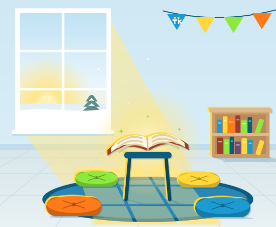

Our vision
That all children at Williamston Community Schools would have the opportunity to have a personal relationship with Jesus Christ.
Home About
About us
Free after school Bible club for boys and girls in Kindergarten – 5th grade.

That all children at Williamston Community Schools would have the opportunity to have a personal relationship with Jesus Christ.
We teach children to know, live, and share the truth of Jesus Christ.
TeamKid exists to mentor youth to grow in their personal relationship with Christ through prayer, worship in song, fun activities, and Bible learning.
Who we are
We are a diverse group of believers — parents and grandparents, homemakers, musicians, teachers, professionals of all sorts — united by our shared faith in Christ Jesus our Lord.
By faith we have been saved. Ever grateful for God’s grace, we live to know Him and make Him known.
When we acknowledge Jesus as Lord and surrender our lives to Him as Savior, we become part of a much larger family.
Belief statement
Apply or donate as your heart directs. Community support keeps Christ’s message of hope in our schools.